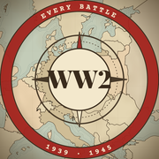

WW2 Battles
Every battle of the Second World War, in order, as a one-minute animated map: who fought, where they moved, what it cost.
Instagram: @ww2battles_ · Facebook: WW2 Battles
Scripts are written from cited sources (listed in each post). Narration is an AI voice; music is public-domain orchestral recordings; map data from Natural Earth, historical-basemaps and © OpenStreetMap contributors.